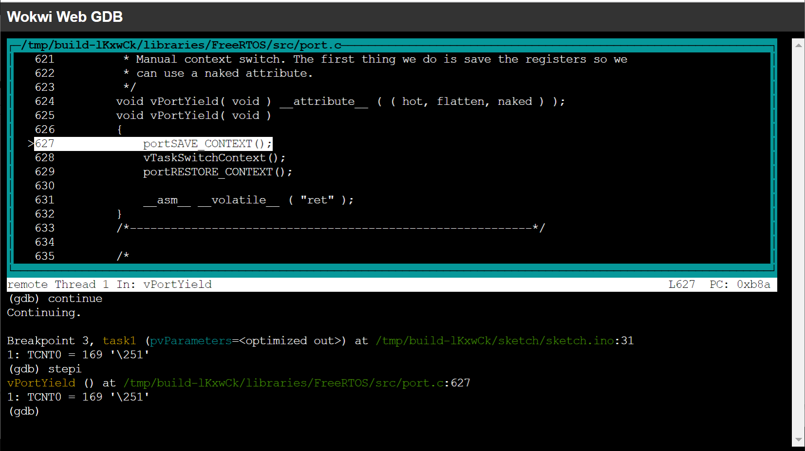
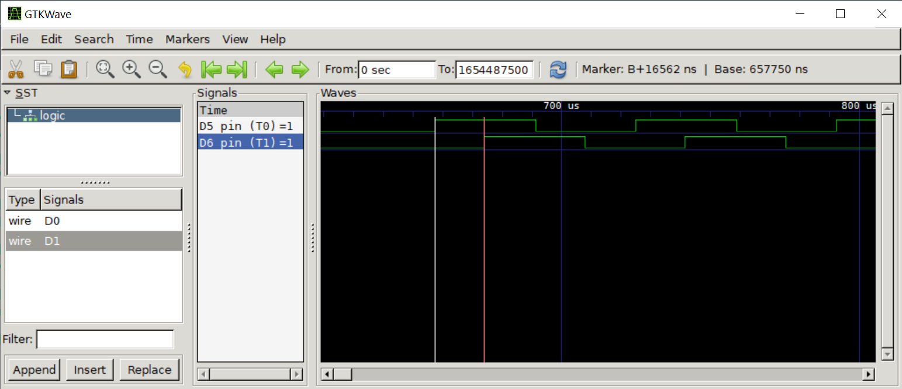

Arduino-FreeRTOS for AVR (Part 3)#
บทความนี้ (ตอนที่ 3) นำเสนอตัวอย่างการเขียนโค้ดโดยใช้ FreeRTOS Library สำหรับบอร์ดไมโครคอนโทรลเลอร์ Arduino ที่ใช้ชิป 8-bit Atmel AVR (เช่น บอร์ด Uno | Nano | MEGA2560) และใช้ซอฟต์แวร์ Arduino IDE ในการเขียนโค้ด รวมถึงสาธิตการจำลองการทำงานด้วย Web-based Wokwi AVR Simulator
Keywords: Arduino, 8-bit AVR, RTOS, FreeRTOS, Wokwi AVR Simulator
- การใช้งาน GDB ร่วมกับ Wokwi Simulator
- การกำหนดตำแหน่ง Breakpoints
- การแสดงค่าตัวเลขในรีจิสเตอร์ของซีพียู
- การจับเวลาระหว่างการเกิด Breakpoints
▷ การใช้งาน GDB ร่วมกับ Wokwi Simulator#
จากเนื้อหาในบทความที่แล้ว (ตอนที่ 1 | 2) เราได้เห็นตัวอย่างการเขียนโค้ด Arduino Sketch โดยใช้งานร่วมกับไลบรารี Arduino-FreeRTOS Library และได้เห็นตัวอย่างการใช้ Web-based Wokwi Simulator เพื่อจำลองการทำงานของโค้ด บันทึกและดูการเปลี่ยนของสัญญาณที่ขาเอาต์พุตของบอร์ด Arduino โดยใช้ Virtual Logic Analyzer ในขณะที่จำลองการทำงานได้เสมือนจริง
ในบทความนี้ เราจะมาเรียนรู้การใช้ GDB: The GNU Project Debugger แบบออนไลน์ร่วมกับ Wokwi Simulator เพื่อดีบักการทำงานของ Arduino Sketch (ภาษา C/C++) ในเบื้องต้น
จากโค้ดตัวอย่างในบทความที่แล้ว เป็นการสาธิตการสร้างทาสก์ (Task Creation) สำหรับ FreeRTOS จำนวน 2 ทาสก์ (T0 และ T1) ซึ่งมีระดับความสำคัญเท่ากัน และจะต้องมีการแบ่งและสลับช่วงเวลากันทำงานโดยซีพียู และจัดการโดย FreeRTOS Task Scheduler
ฟังก์ชันการทำงานของแต่ละทาสก์ จะมีการทำคำสั่ง taskYIELD()
เพื่อให้มีการเปลี่ยนบริบทการทำงานของทาสก์ที่กำลังทำงานอยู่
และให้ทาสก์อื่นที่พร้อมจะทำงาน ได้มีโอกาสทำงานเป็นลำดับถัดไปโดยทันที (Task Context Switching)
ดังนั้นในตัวอย่างนี้ T0 และ T1 จะสลับกันทำงานหลังจากทำคำสั่งดังกล่าว
พฤติกรรมการทำงานของทาสก์ทั้งสอง สามารถมองเห็นได้จากการเปลี่ยนแปลงของสถานะลอจิกที่ขาเอาต์พุตที่เกี่ยวข้อง
(ขา D5 และ D6 สำหรับทาสก์ T0 และ T1 ตามลำดับ)
และบันทึกการเปลี่ยนแปลงได้โดยใช้ Logic Analyzer ของ Wokwi Simulator
ตัวอย่างโค้ด
#include <Arduino_FreeRTOS.h>
#define LED0_PIN 5 // D5
#define LED1_PIN 6 // D6
void task0( void *pvParameters );
void task1( void *pvParameters );
void setup() {
xTaskCreate( task0, "T0", 192, NULL,
tskIDLE_PRIORITY+1, NULL );
xTaskCreate( task1, "T1", 192, NULL,
tskIDLE_PRIORITY+1, NULL );
// Note the FreeRTOS task scheduler is started automatically.
}
void loop() {}
// task entry function for T0
void task0( void *pvParameters ) {
DDRD |= _BV(DDD5); // output direction for PD5
while (1) {
PIND |= _BV(PD5); // toggle PD5 output
taskYIELD(); // yield the CPU to the next ready task of the same priority
}
}
// task entry function for T1
void task1( void *pvParameters ){ // task function for T1
DDRD |= _BV(DDD6); // output direction for PD6
while (1) {
PIND |= _BV(PD6); // toggle PD6 output
taskYIELD(); // yield the CPU to the next ready task of the same priority
}
}
จากตัวอย่างโค้ดจะเห็นได้ว่า ในแต่ละรอบของ while(1){...}
ภายในฟังก์ชันของทาสก์ (task0() และ task1())
จะมีการทำ 2 คำสั่ง เท่านั้น
คำสั่งแรกคือ การเปลี่ยนสถานะลอจิกของขาเอาต์พุตที่เกี่ยวข้อง
(การเขียนค่าบิต 1 ลงในรีจิสเตอร์ PIND จะทำให้เกิดการสลับสถานะลอจิกที่ขาเอาต์พุต)
และอีกคำสั่งหนึ่งคือ taskYIELD()
ดังนั้นอัตราการเปลี่ยนสถานะลอจิกที่ขาเอาต์พุตของแต่ทาสก์ จะทำได้ช้าหรือเร็ว
ก็ขึ้นอยู่กับระยะเวลาที่ใช้ในการทำคำสั่งทั้งสองเป็นหลัก
รูป: การเขียนโค้ดและจำลองการทำงานด้วย Wokwi Simulator
จากตัวอย่างโค้ดนี้ เมื่อได้สร้างโปรเจกต์พร้อมโค้ดตัวอย่าง Arduino Sketch และต่อวงจรตามรูปตัวอย่างแล้ว เราจะจำลองการทำงานด้วย Wokwi Simulator และเปิดใช้งาน Online GDB Debugger for AVR ไปพร้อมกัน เราสามารถดีบักการทำงานโค้ดได้ เช่น การกำหนดตำแหน่งหยุดชั่วคราวหรือที่เรียกว่า Breakpoints ในซอร์สโค้ด การดูค่าของตัวแปร หรือรีจิสเตอร์ของซีพียู ในขณะที่จำลองการทำงาน เป็นต้น
เริ่มต้นให้คลิกเมาส์บริเวณส่วนที่เขียนโค้ด แล้วกดปุ่มFn + F1
จากนั้นให้พิมพ์ค้นหาคำว่า GDB เลือกรายการ Start GDB Session (debug build)
จากนั้นจะมีการเปิดหน้า Tab ใหม่ในเบราว์เซอร์ ตามรูปตัวอย่าง
รูป: เริ่มต้น Wokwi Web GDB เข้า Simulator-based GDB Debug Session
และ (gdb) เป็นสัญลักษณ์ GDB prompt เพื่อรับอินพุตสำหรับคำสั่งของ GDB โดยผู้ใช้
▷ การกำหนดตำแหน่ง Breakpoints#
เมื่อเข้าสู่ GDB session การทำคำสั่งของซีพียู จะมาหยุดอยู่ที่คำสั่งแรกที่แอดเดรส
0x00000000 ซึ่งเป็น Reset Vector ของ AVR ในบริเวณหน่วยความจำที่เรียกว่า
Interrupt vector table ของหน่วยความจำสำหรับโปรแกรม (Program Memory)
ถ้าพิมพ์คำสั่ง where จะให้ข้อความเอาต์พุตที่ระบุว่า โปรแกรมได้ทำงานมาหยุดในตำแหน่งใด
ถัดไป เราจะลองมาเพิ่มตำแหน่งของ Breakpoints ในไฟล์ sketch.ino เช่น
ให้มี 3 ตำแหน่งดังนี้
- ตำแหน่งที่เป็นจุดเริ่มต้นของฟังก์ชัน
setup()ของ Arduino Sketch ในไฟล์sketch.ino - บรรทัดที่ 22 ในไฟล์
sketch.inoซึ่งเป็นการเรียกใช้ฟังก์ชันtaskYIELD()ในฟังก์ชันของทาสก์ T0 - บรรทัดที่ 31 ในไฟล์
sketch.inoซึ่งเป็นการเรียกใช้ฟังก์ชันtaskYIELD()ในฟังก์ชันของทาสก์ T1
คำสั่งสำหรับ GDB เพื่อกำหนดตำแหน่ง Breakpoints ตามที่กล่าวไป มีดังนี้
break sketch.ino:setup()
break sketch.ino:22
break sketch.ino:31
ถ้าต้องการทราบว่า มีการกำหนด Breakpoints ไว้อย่างไรบ้าง ให้ทำคำสั่งต่อไปนี้
info breakpoints
รูป: ตัวอย่างการทำคำสั่งเพื่อเพิ่มและตรวจสอบตำแหน่ง Breakpoints ในไฟล์ sketch.ino
▷ การแสดงค่าตัวเลขในรีจิสเตอร์ของซีพียู#
ถ้าต้องการดูค่าของตัวแปรในโค้ดหรือรีจิสเตอร์ของซีพียูในขณะนั้น
ก็สามารถใช้คำสั่ง print แล้วตามด้วยชื่อตัวแปรหรือรีจิสเตอร์
การทำงานของโค้ดที่เขียนด้วย Arduino API จะมีการใช้วงจร Timer0
เป็นตัวนับตามจังหวะเพื่อใช้ในการอ่านค่าเวลาของระบบ เช่น คำสั่ง millis() และ micros()
สำหรับ Arduino Uno หรือ Nano
ซีพียูจะทำงานด้วยความถี่ F_CPU เท่ากับ 16MHz และได้ตั้งค่าตัวหารความถี่ (Prescaler) ไว้เท่ากับ
64 สำหรับตัวนับ Timer0
ดังนั้นตัวนับนี้ จะมีค่าเพิ่มขึ้นทีละหนึ่ง ทุก ๆ 4 ไมโครวินาที
(= 64/16 MHz = 4 us per tick)
และมีความละเอียดในการอ่านค่า (Timer Resolution)
เท่ากับ 4 ไมโครวินาที ดังนั้น ค่าที่ได้กลับมา (Retun Value)
จากการทำคำสั่ง micros() ของ Arduino API จะเป็นเลขจำนวนเต็มและหาร 4 ลงตัว
เนื่องจากตัวนับ TCNT0 ของ Timer0 มีขนาด 8 บิต
ดังนั้นจะมีค่าในช่วง 0..255 แล้วไป เมื่อเพิ่มขึ้นจาก 0 ถึงค่าสูงสุดแล้ว จะเริ่มนับที่ค่า 0 ใหม่ และทำให้เกิด
Timer0 Overflow
เหตุการณ์อินเทอร์รัพท์ที่เกี่ยวข้อง จะเกิดขึ้นทุก ๆ 1024 us (= 256 × 4 us) รวมถึงการเพิ่มค่าของตัวแปร ที่ใช้ระบุว่า มีการนับครบรอบไปแล้วกี่ครั้ง
การอ่านค่าเวลาของระบบในหน่วยเป็นไมโครวินาที อาจสร้างฟังก์ชันเป็นแนวทางได้ดังนี้
(ดูโค้ดจริงที่ใช้กับ Arduino ได้ในไฟล์
wiring.c)
โดยที่ตัวแปร timer0_overflow_count หมายถึง ตัวแปรที่ใช้นับจำนวนครั้งที่เกิด
Timer0 Overflow
unsigned long micros() {
((timer0_overflow_count << 8) + TCNT0) * (64/16);
}
หากต้องการดูค่าในรีจิสเตอร์ของ AVR เช่น TCNT0 | DDRD | PORTD ใน GDB ก็ให้ทำคำสั่งดังนี้
ซึ่งจะแสดงเป็นตัวเลขฐานสิบ (/d Decimal)
print/d TCNT0
print/d DDRD
print/d PORTD
แต่ถ้าต้องการแสดงเป็นตัวเลขในฐานสิบหก (/x Hexademical) ก็มีตัวอย่างดังนี้
print/x TCNT0
print/x DDRD
print/x PORTD
หรือเป็นตัวเลขในฐานสอง ('/t` Binary)
print/t TCNT0
print/t DDRD
print/t PORTD
รูป: ตัวอย่างการทำคำสั่งเพื่อดูค่าของรีจิสเตอร์ TCNT0 และทำคำสั่ง continue
เพื่อรันโค้ดจนกว่าจะไปหยุดที่ตำแหน่ง Breakpoint ถัดไป
ถ้าทำคำสั่ง continue เป็นการรันโค้ดต่อไป จนกว่าจะหยุดเมื่อพบตำแหน่ง Breakpoint
หากต้องการดูซอร์สโค้ดในขณะนั้นในบริเวณที่มีตำแหน่งของ Breakpoint ก็ให้ทำคำสั่งต่อไปนี้
layout src (Display the source window) หรือ
ทำคำสั่ง layout asm เพื่อดูโค้ดที่มีการคอมไพล์ให้เป็นภาษา AVR-Assembly แล้ว
ให้สังเกตบรรทัดในโค้ดที่มีแถบสี Highlight และสัญลักษณ์ +B> ซึ่งก็คือ ตำแหน่งของ Breakpoint ในขณะนั้น (รันโค้ดแล้วมาหยุดที่ตำแหน่งดังกล่าว)
รูป: ตัวอย่างการแสดงตำแหน่งของ Breakpoint ในไฟล์ซอร์สโค้ด
หากต้องการให้มีการแสดงค่าของรีจิสเตอร์โดยอัตโนมัติ ทุกครั้งเมื่อหยุดการทำงานชั่วคราวในตำแหน่ง Breakpoint ใด ๆ
ก็ให้ใช้คำสั่ง display ตามรูปแบบต่อไปนี้ เช่น แสดงค่าของ TCNT0 เป็นเลขจำนวนเต็ม (/u Unsigned Integer)
display/u TCNT0
รูป: การแสดงค่าตัวเลขของรีจิสเตอร์ TCNT0 ในขณะนั้น
หากต้องการรันคำสั่งถัดไป โดยเข้าไปสู่ภายในของฟังก์ชันเมื่ออยู่ในบรรทัดที่มีการเรียกใช้ฟังก์ชัน (Function Call) ให้ทำคำสั่งดังนี้
stepi
ถ้าทำคำสั่งในบรรทัดถัดไป ก็ให้ใช้คำสั่งดังนี้
next
ในกรณีที่ได้เข้าไปทำคำสั่งในฟังก์ชัน แล้วจะออกจากฟังก์ชันดังกล่าว (Return from function) ก็ให้ทำคำสั่งดังนี้
finish

รูป: การรันคำสั่งเข้าไปในฟังก์ชัน vPortYield() ซึ่งก็คือ taskYIELD() เป็นฟังก์ชันเดียวกัน
จากตัวอย่างการดีบัก จะเห็นได้ว่า การทำงานของฟังก์ชัน vPortYield()
(ดูโค้ดที่เกี่ยวข้องได้ในไฟล์ port.c)
ประกอบด้วยการเรียกใช้ 3 ฟังก์ชัน ตามลำดับดังนี้
portSAVE_CONTEXT()เป็นการบันทึกบริบทการทำงานของทาสก์ (Task Context) ในขณะนั้น ไปเก็บไว้ในหน่วยความจำสำหรับ Task Stack- มีโค้ด (Inline AVR Assembly) ที่เกี่ยวข้องอยู่ในไฟล์
port.c
- มีโค้ด (Inline AVR Assembly) ที่เกี่ยวข้องอยู่ในไฟล์
vTaskSwitchContext()เป็นการเลือกทาสก์ถัดไปที่พร้อมจะทำงานและมีระดับความสำคัญสูงกว่าทาสก์อื่นเพื่อรับช่วงต่อ- มีโค้ดที่เกี่ยวข้องอยู่ในไฟล์
tasks.c
- มีโค้ดที่เกี่ยวข้องอยู่ในไฟล์
portRESTORE_CONTEXT()เป็นการนำบริบทการทำงานของทาสก์ถัดไปที่ได้จาก Task Scheduler มาใส่ลงในรีจิสเตอร์ต่าง ๆ ของซีพียู เพื่อให้ทำงานในลำดับถัดไป- มีโค้ด (Inline AVR Assembly) ที่เกี่ยวข้องอยู่ในไฟล์
port.c
- มีโค้ด (Inline AVR Assembly) ที่เกี่ยวข้องอยู่ในไฟล์
หากต้องการจะเริ่มต้นใหม่ และย้อนกลับไปเริ่มที่ Reset Vector โดยการกำหนดค่า
PC (Program Counter) หรือ $pc ให้เป็น 0x0 ให้ทำคำสั่งต่อไปนี้
set $pc=0x0
▷ การจับเวลาระหว่างการเกิด Breakpoints#
ถ้าหากต้องการจับเวลาการทำงานของโค้ดระหว่างการเกิด Breakpoint ในแต่ละครั้ง จะมีแนวทางอย่างไร ?
แนวทางหนึ่งคือ การใช้ค่าของรีจิสเตอร์ TCNT0 เป็นตัวจับเวลา เนื่องจากค่าของรีจิสเตอร์นี้ จะถูกเพิ่มขึ้นทีละหนึ่ง
ทุก ๆ 4 ไมโครวินาที ถ้าเราอ่านค่าของรีจิสเตอร์ก่อนและหลังจากที่ได้เรียกฟังก์ชัน taskYIELD() ซึ่งเป็นฟังก์ชันเดียวกันกับ vPortYield()
แล้วนำไปคำนวณค่าผลต่างระหว่างสองครั้งดังกล่าว และคูณด้วย 4 us ก็จะได้ระยะเวลาที่ต้องการทราบ
จากการทดลองด้วยวิธีนี้พบว่า คำสั่ง taskYIELD() จะใช้เวลาเท่ากับ 4 ticks ของ Timer0
หรือเท่ากับ 16 us (= 4 ticks × 4 us per Timer0 tick)
และใกล้เคียงกับค่าที่วัดได้จากการจับเวลาของสัญญาณเอาต์พุตด้วย Virtual Logic Analyzer
ในรูปคลื่นสัญญาณต่อไปนี้ (ได้ค่า ~16.5 us)

รูป: ระยะเวลาในการเปลี่ยนบริบทจากทาสก์หนึ่งไปสู่อีกทาสก์หนึ่ง โดยดูจากการเปลี่ยนสถานะลอจิกของสัญญาณเอาต์พุต ของแต่ละทาสก์ (จาก T0 ไปสู่ T1 วัดค่าได้ ~16.5 us)
รูป: ระยะเวลาในการเปลี่ยนบริบทจากทาสก์หนึ่งไปสู่อีกทาสก์หนึ่ง โดยดูจากการเปลี่ยนสถานะลอจิกของสัญญาณเอาต์พุตของแต่ละทาสก์ (จาก T1 ไปสู่ T0 วัดค่าได้ ~17.1 us )
การสลับสถานะลอจิกที่ขาเอาต์พุตของแต่ละทาสก์ จะใช้เวลาเท่ากับ 9 ticks หรือ 36 us และนำไปเปรียบเทียบกับการวัดความกว้างของพัลส์ที่ขาเอาต์พุต ซึ่งได้ระยะเวลา ~33.68 us จากรูปคลื่นสัญญาณต่อไปนี้
รูป: การวัดความกว้างของพัลส์ (ช่วงที่เป็น High) ของสัญญาณเอาต์พุตที่เกิดจากการทำงานของทาสก์ T0
▷ กล่าวสรุป#
ในบทความนี้ เราได้เห็นวิธีการใช้งาน Online GDB Debugger ร่วมกับ Wokwi Simulator ในการตรวจสอบ (ดีบัก) และศึกษาพฤติกรรมการทำงานของโค้ด Arduin Sketch ที่มีการใช้คำสั่งต่าง ๆ ของ Arduino-FreeRTOS Library
This work is licensed under a Creative Commons Attribution-ShareAlike 4.0 International License.
Created: 2021-12-27 | Last Updated: 2022-01-25